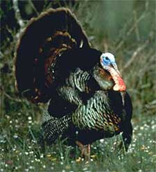
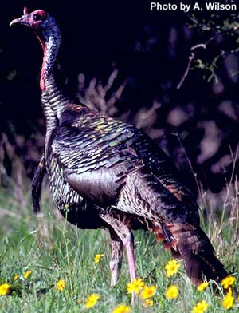

TACCHINO (WILD TURKEY)

| Climate/Terrain | Foreste Temperate |
| Frequency | Uncommon |
| Organization | Piccoli Gruppi |
| Activity Cycle | Day |
| Diet | Onnivoro |
| Intelligence | Animal (1) |
| Treasure | Nessuno |
| Alignment | Neutral |
| No. Appearing | 1-4 |
| Armor Class | 7 |
| Movement | 18 |
| Hit Dice | 1 + 3 |
| Thac0 | 19 |
| No. of Attacks | 1 beccata e 1 artiglio |
| Damage / Attacks | 1d4/1d6 |
| Special Attacks | Nessuno |
| Special Defenses | Nessuno |
| Magic Resistance | Nessuna |
| Size | Medium |
| Morale | Steady (12) |
| XP value | 25 |
Descrizione
Questo grande uccello ha il collo e la testa nudi e dalla base del becco dipartono delle sporgenze carnose dilatabili ed erettili. Il maschio presenta un ciuffo di rigide setole sul petto. Il piumaggio è scuro con riflessi metallici ed il maschio presenta colori più vivaci della femmina. E’ un uccello terricolo, e per questo possiede delle forti e robuste zampe. Le dimensioni sono notevoli: il maschio supera i 120 cm per circa 30 kg e la femmina i 90 cm per oltre 20 kg.
Combat
Il tacchino combatte dando una beccata ed una possente zampata al nemico. Il tacchino può effettuare grandi salti volando fino a coprire 12 metri in lungo e 6 metri in alto. In caso di pericolo può saltare in questo modo su un albero.
Habitat/Society
Il tacchino è terricolo ma, su brevi distanze, è anche un potente volatore e al sopraggiungere della notte vola su qualche albero. In natura il tacchino vive in piccoli gruppi nelle foreste aperte alla ricerca di semi, noci, bacche, piccoli animali, come cavallette, salamandre e lucertole. Al sopraggiungere del periodo degli amori, i maschi danno vita ad agguerriti combattimenti, che possono terminare con il ferimento o addirittura con la morte di uno dei due contendenti. Il corteggiamento è elaborato con parate simili a quelle del pavone, sfoggiando la coda a ventaglio, le caruncole rigonfie, emettendo i caratteristici richiami e gloglottando. Solo la madre si occupa del nido, rappresentato da una semplice depressione del terreno e ricoperto di foglie. Sono deposte una dozzina di uova color crema con delle macchie rossastre e, ogni qualvolta la femmina si allontana alla ricerca di cibo, copre le uova con le foglie. Dopo un’incubazione di circa un mese, i giovani tacchini sono accuditi dalla madre per un paio di settimane, anche se, già nella prima notte, si allontanano dal nido.
Ecology
Quando si trova un tacchino vi è il 35% che nella zona vi siano le uova nel nido (si trovano in 1 turno di ricerca). Se si trovano il nido vi saranno 2d6 uova che potranno essere vendute a 1 s.p. l'una. Il tacchino ucciso può essere venduto come cacciagione prelibata al costo di 1,5 g.p..
